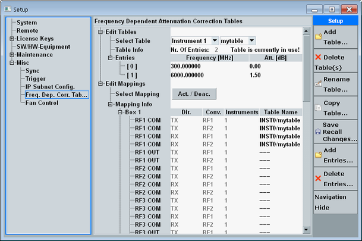
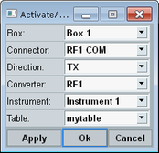
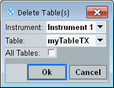
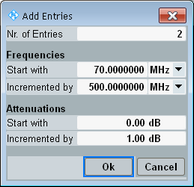
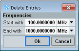

This section administrates correction tables for frequency-dependent attenuation/gain. For additional information concerning the usage of the tables, refer to "RF Path Settings (Generators)" and "Connection Control (Measurements)".

This section selects a correction table and displays its entries.
You can edit existing table entries directly. To add or delete entries, use the corresponding softkeys.
To rename, copy or delete a table, use the softkeys.
All correction tables are defined subinstrument specific. Within each subinstrument, the table names are unique. You can create two tables with the same name in different subinstruments, but not in the same subinstrument.
You can use all tables for all subinstruments, independent of for which subinstrument you have defined the table.
Selects the correction table to be edited, copied or renamed.
To select a table, select first the subinstrument ("Instrument n"), then select the table name.
Remote command:Displays the number of entries in the selected table.
If "Table is currently in use!" is displayed, this message means that the table is assigned to at least one RF path in section "Edit Mappings".
Remote command:Displays the entries of the selected table. Each entry consists of a frequency and an attenuation value.
The table is sorted automatically with increasing frequencies. Each entry must have a different frequency.
Remote command:This section configures and displays the assignment of correction tables to RF signal paths.
A global reset or preset deletes all assignments. A reset or preset of a subinstrument or application does not affect the assignments.
The button opens a dialog box for assigning correction tables to RF signal paths.

The upper settings select a connector ("Box", "Connector", "Direction", "Converter").
The lower settings select the correction table assigned to the connector (subinstrument for which the table has been defined and name of the table).
Remote command:Provides an overview of the correction table assignments.
Each box number corresponds to a physical instrument. Each line shows information for a single input or output RF signal path.
The column "Instruments" shows to which subinstrument a connector belongs. The column "Table Name" shows assigned correction tables, including the subinstrument for which a table has been defined and the table name. "INST0/mytable", for example, refers to the table "mytable" defined for subinstrument number 1 (remote control INST0).
Remote command:The following softkeys are related to the correction tables.
Most softkeys are only active if the section "Edit Tables" is selected.
Creates a correction table without any entries. A dialog box opens for selection of the subinstrument and specification of the table name.
Remote command:Deletes a selected table or all tables of a subinstrument. A dialog box opens for selection of the table to be deleted.

If a deleted table was in use, the corresponding assignments in section "Edit Mappings" are removed.
Remote command:Renames the table selected in section "Edit Tables". A dialog box opens for specification of the new table name.
If the table is in use, section "Edit Mappings" is updated automatically.
Remote command:n/a
Creates a copy of the table selected in section "Edit Tables".
A dialog box opens for selection of the subinstrument for the new table and specification of the new table name.
Remote command:n/a
When the application software is started, the existing correction tables are loaded from the system drive into the RAM.
Most actions performed in section "Edit Tables" affect only the tables in the RAM, but not the tables on the system drive. This rule applies, for example, to creating a table, copying a table or modifying table entries. Deleting or renaming a table affects both the RAM and the system drive.
When the application software is closed (e.g. by pressing the standby key), all correction tables in the RAM are stored to the system drive automatically.
A "Save Changes" operation triggers this action manually. The tables in the RAM are stored to the system drive.
A "Recall Changes / Tables" operation loads all tables from the system drive into the RAM. Thus you can undo not yet saved changes. New tables in the RAM that do not yet exist on the system drive are not deleted from the RAM.
A dialog box opens where you can select whether you want to save or recall changes. If the softkey is labeled "Recall Tables", there are no unsaved changes.
Remote command:Adds new entries to the table selected in section "Edit Tables".
A dialog box opens for specification of the entries.

Deletes a range of entries from the table selected in section "Edit Tables".
A dialog box opens for specification of the frequency range to be deleted.
